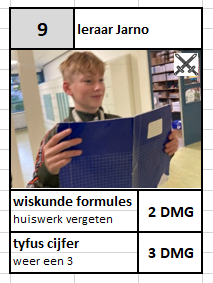

De officiele Jarno Kaarten website.
Wil jij op de hoogte blijven van de nieuwste kaarten of evenementen of wil jij je eigen Jarno Kaarten zoek dan niet verder. Op onze nieuws pagina vind je alles over
de nieuwste collectie Jarno Kaarten tot de tofste evenementen met tegekke prijsen. Wil jij zelf Jarno Kaarten krijgen om met evenementen mee te kunnen doen bezoek
dan onze shop pagina om uit onze selectie pakjes te kiezen, of bezoek de trade pagina waar misschien iemand een van zijn Kaarten verkoopt.

Hoe zijn we begonnen
Op een dood normale dag tijdens het fietsen maakten Mike Kramer, Jarno Eshuis en Lucas Verlint een grap over een kaartspel van Jarno, dezelfde middag maakten
Mike en Jarno zelf het eerste ontwerp voor de kaarten. Na een paar dagen hard werken hadden we de basis van het spel en een paar kaarten af, waarna we besloten
de eerste kaarten af te drukken en voor het eerst te spelen met 8 kaarten. Het eerste potje Jarno Kaarten is op 11 november 2022, hier speelde we dus met dee eerste
8 kaarten. Op 11 en 12 november hadden Mike en Jarno gewerkt om de eerste set Jarno Kaarten af te maken, deze zet bevat net zoals nu nogsteeds 30 unieke kaarten.
Vervolgens kwamen de eerste Jarno Kaarten pakjes uit, het was gelijk een succes. Door het succes van de eerste serie kaarten besloten we gelijk aan een tweede serie
kaarten die vervolgens nooit helemaal afgemaakt is.
 Waarom Jarno Kaarten 2.0
Waarom Jarno Kaarten 2.0
In begin maart 2024 besloten Mike en Jarno samen weer verder te werken aan Jarno Kaarten, ons eerste idee was om Jarno Kaarten online te maken, maar door de tekort
aan hulp is dat tot de dag vanvandaag nog niet gelukt. Om Jarno Kaarten weer opnieuw leuk te maken besloten we dat we een nieuw design en hulp nodig hadden. We begonnen
met Dinand Vierhout om hulp vragen om bij ons te werken, hij begon als designer bij ons bedrijf. Vervolgens heeft Mike nieuwe designs voor de kaarten, bij deze make-over
bleef het niet. We besloten een nieuw systeem te maken voor het spel, mana. Naast de verandering van de kaarten hebben we ook de tweede serie kaarten nog uitgebracht
en besloten we nieuwe dingen te testen zoals deze website en de kans om je eigen kaarten te kopen. We zijn natuurlijk nog lang niet klaar met Jarno Kaarten waardoor er
nog veel nieuwe kaarten en functies zullen komen over de tijd heen.